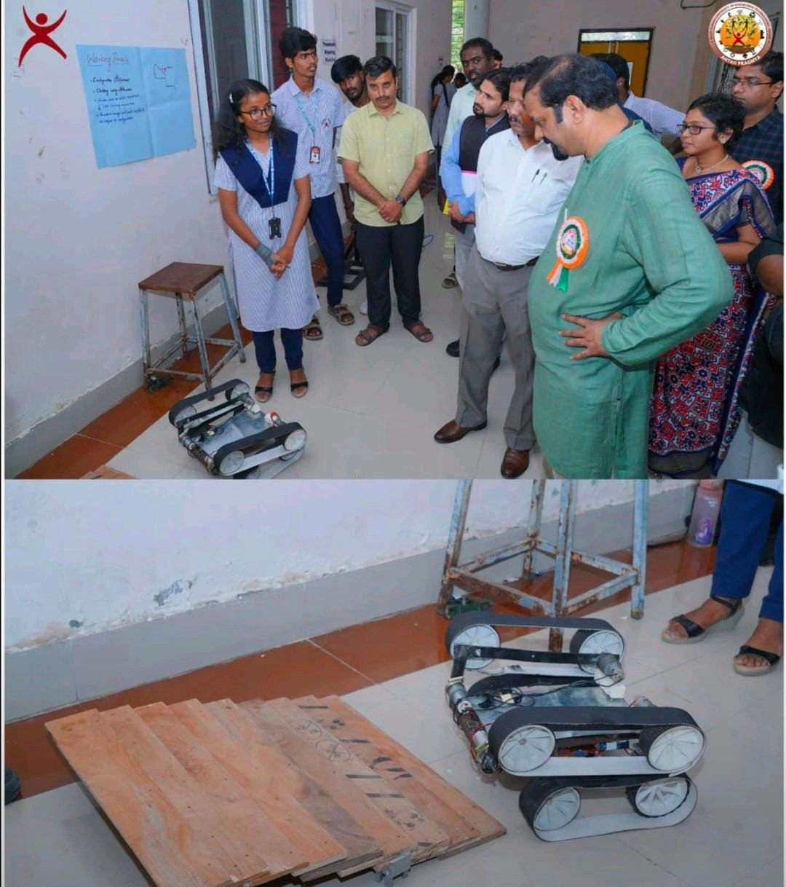
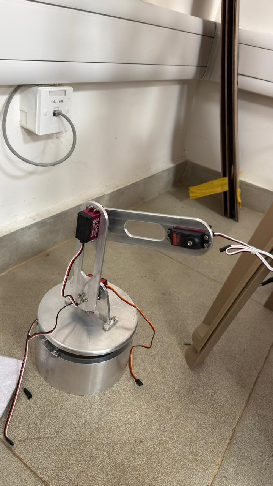

Stair Climbing Robot
Project Overview
I designed and fabricated a Bluetooth-controlled tracked robot engineered to traverse complex stairs. My main objective was to develop a mechanical platform capable of climbing steps of varying heights while maintaining stable cargo balancing. This mechanism serves as a foundation for search-and-rescue operations or domestic utility robotics.
Tracked Mechanism & Stability Optimization
I designed the mechanical linkages and high-traction tracked belt drive in SolidWorks. The main challenge was avoiding vehicle tip-over during climbing transitions. I solved this by optimizing the robot's center of mass, shifting the battery pack forward, and designing flexible track suspension links that absorb vertical impacts.
To drive the tracks, I used high-torque DC geared motors controlled by an Arduino Uno through dual H-bridge motor drivers. I calibrated the speed ratios to allow the tracks to climb steps smoothly without slipping or stalling.
Robotic Arm Integration
To expand the robot's functionality, I machined and integrated a lightweight multi-axis robotic arm onto the chassis frame. I configured the arm joints using servo motors controlled via serial commands from the Arduino.
I established a Bluetooth telemetry link to a custom Android application. This allowed for real-time remote teleoperation of the robot's movements and joint angles, enabling pick-and-place trials of cargo during stair climbing missions.
Key Deliverables & Achievements
- Designed a tracked belt drive mechanism enabling efficient stair climbing on standard steps.
- Optimized chassis geometry and weight distribution to prevent flipping during stair climbing transitions.
- Machined and integrated a lightweight robotic arm onto the chassis to enable cargo retrieval.
- Wired control circuits using Arduino, Bluetooth (HC-05), and motor controllers for wireless operations.

